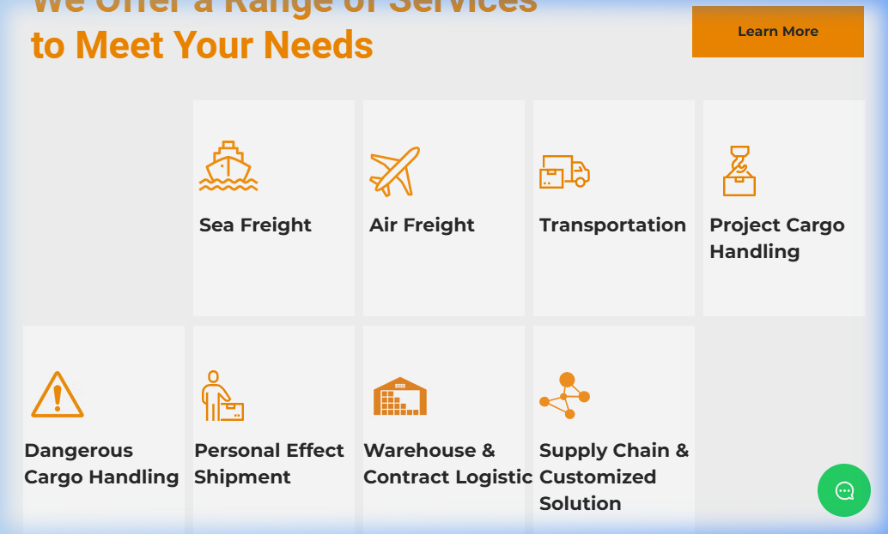

01. Conversion Axiom Analysis
Motivation (M) is verified via global freight demand. Proof (P) is elite via existing certifications. However, the site fails at Diagnosis (D). Prospects are forced into a "Wait State," manually selecting services without a diagnostic check.
02. The Wall of Choice (Cognitive Load)

The 8-option service grid requires the prospect to self-diagnose complex logistics before reaching a specialist. This creates immediate cognitive fatigue and high bounce probability.
03. The Data-Entry Black Box (Friction)

Prospects are asked for 10+ data points without receiving a 'Certainty Signal' in return. This is a primary D+F Leak.
04. Proposed Asset: Logistics Certainty Navigator
| Step | Action | Objective |
|---|---|---|
| 01 | Route Triage | Validate lane feasibility instantly to prove network scope. |
| 02 | Cargo Diagnostic | Shift from "Which Service?" to "What Constraint?". |
| 03 | Feasibility Lock | Anchor P-Signals (WCA/SLA) at the point of decision. |
05. Score Justification
Classification: Critical Failure. The site abandons the prospect at the point of intent. By providing no immediate diagnosis, the company forces the prospect to perform the work that the internal sales team should be doing. Target Score after Fix: 9.4/10.